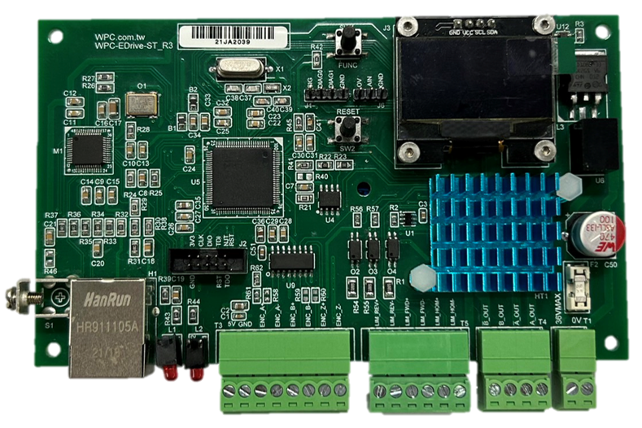

WPC Python driver
3.2.4
API REFERNECE
Products Feature
Products Usage
Utilities
Wifi devices
Ethernet devices
STEM
EDrive-ST
Device pinout
API function description
EMotion
Ethan-A
Ethan-A2
Ethan-D
Ethan-EX-D
Ethan-I
Ethan-IA
Ethan-L
Ethan-O
Ethan-P
Ethan-T
USB devices
Drone devices
EXAMPLE CODES
Example Codes - Console (sync)
Example Codes - Console (async)
Example Codes - GUI (sync)
APPENDICES
I/O Port Function Table
I/O Channel Function Table
AI Max Sampling Rate Table
Error Code Table
Setting Table
WPC Python driver
»
Products Usage
»
EDrive-ST
EDrive-ST
Device pinout

API function description